PASS · 64 complete runs · 0 failed checks.
Measured IPC assumes synchronous MAC0 inference. Existing seed7 models; no finite-cost IPC or independent-seed robustness claim. Global-model training0..20M/8epochs and Stride0..1M/12epochs are different budgets; training coordinates are not online state history. Replication25..50M and future75..100M remain separate.
L2 and LLC target LOAD-only metrics remain separate. LLC ratios are NA if tracking is incomplete. Native SPP and its student have the documented fill-feedback input difference. Negative and mixed outcomes remain in this table.
| Policy | ROI | Seed | Method | Mode | Ceiling | IPC / NoPF | L2 accuracy | LLC accuracy |
|---|---|---|---|---|---|---|---|---|
| ampm | 0 | 7 | native | full | 0 | 1.16898 | 0.13128 | NA |
| ampm | 0 | 7 | native | full | 16144 | 1.13895 | 0.39234 | NA |
| ampm | 0 | 7 | student | fixed_payload | 0 | 1.17057 | 0.38467 | NA |
| ampm | 0 | 7 | student | full | 0 | 1.16435 | 0.36865 | NA |
| ampm | 0 | 7 | student | full | 16144 | 1.15886 | 0.44062 | NA |
| ampm | 0 | 7 | student | reset_state | 0 | 1.15046 | 0.42606 | NA |
| ampm | 0 | 7 | template | full | 0 | 1.16987 | 0.46854 | NA |
| none | 0 | 7 | none | full | 0 | 1.00000 | NA | NA |
| spp | 0 | 7 | native | full | 0 | 1.16275 | 0.56764 | 0.02928 |
| spp | 0 | 7 | native | full | 16144 | 1.15235 | 0.71983 | 0.26057 |
| spp | 0 | 7 | student | fixed_payload | 0 | 1.14869 | NA | 0.09851 |
| spp | 0 | 7 | student | full | 0 | 1.14869 | NA | 0.09851 |
| spp | 0 | 7 | student | full | 16144 | 1.13402 | NA | 0.47105 |
| spp | 0 | 7 | student | reset_state | 0 | 1.14795 | 0.26728 | 0.17546 |
| spp | 0 | 7 | template | full | 0 | 1.14869 | NA | 0.09851 |
| streamer | 0 | 7 | native | full | 0 | 1.17183 | 0.10383 | NA |
| streamer | 0 | 7 | native | full | 16144 | 1.16395 | 0.45235 | NA |
| streamer | 0 | 7 | student | fixed_payload | 0 | 1.18692 | 0.24566 | NA |
| streamer | 0 | 7 | student | full | 0 | 1.18692 | 0.24566 | NA |
| streamer | 0 | 7 | student | full | 16144 | 1.17343 | 0.47354 | NA |
| streamer | 0 | 7 | student | reset_state | 0 | 1.18085 | 0.48380 | NA |
| streamer | 0 | 7 | template | full | 0 | 1.18692 | 0.24565 | NA |
| stride | 0 | 7 | native | full | 0 | 1.00610 | 0.28971 | NA |
| stride | 0 | 7 | native | full | 16144 | 1.00610 | 0.28971 | NA |
| stride | 0 | 7 | stride_forward1 | full | 0 | 1.00616 | 0.58445 | NA |
| stride | 0 | 7 | stride_forward2 | full | 0 | 1.01076 | 0.56426 | NA |
| stride | 0 | 7 | stride_student | full | 0 | 1.11187 | 0.48677 | NA |
| stride | 0 | 7 | stride_student | full | 16144 | 1.11187 | 0.48678 | NA |
| ampm | 1 | 7 | native | full | 0 | 1.37270 | 0.17352 | NA |
| ampm | 1 | 7 | native | full | 16144 | 1.14354 | 0.41811 | NA |
| ampm | 1 | 7 | student | fixed_payload | 0 | 1.37866 | 0.48659 | NA |
| ampm | 1 | 7 | student | full | 0 | 1.36184 | 0.46553 | NA |
| ampm | 1 | 7 | student | full | 16144 | 1.15887 | 0.45971 | NA |
| ampm | 1 | 7 | student | reset_state | 0 | 1.32859 | 0.54194 | NA |
| ampm | 1 | 7 | template | full | 0 | 1.37687 | 0.57929 | NA |
| none | 1 | 7 | none | full | 0 | 1.00000 | NA | NA |
| spp | 1 | 7 | native | full | 0 | 1.35424 | 0.70774 | 0.03825 |
| spp | 1 | 7 | native | full | 16144 | 1.16307 | 0.74979 | 0.28572 |
| spp | 1 | 7 | student | fixed_payload | 0 | 1.30678 | NA | 0.12440 |
| spp | 1 | 7 | student | full | 0 | 1.30681 | 0.98485 | 0.12437 |
| spp | 1 | 7 | student | full | 16144 | 1.13699 | 0.92857 | 0.48961 |
| spp | 1 | 7 | student | reset_state | 0 | 1.29469 | 0.19962 | 0.21832 |
| spp | 1 | 7 | template | full | 0 | 1.30678 | NA | 0.12440 |
| streamer | 1 | 7 | native | full | 0 | 1.39015 | 0.13468 | NA |
| streamer | 1 | 7 | native | full | 16144 | 1.17327 | 0.48201 | NA |
| streamer | 1 | 7 | student | fixed_payload | 0 | 1.36606 | 0.31604 | NA |
| streamer | 1 | 7 | student | full | 0 | 1.36605 | 0.31603 | NA |
| streamer | 1 | 7 | student | full | 16144 | 1.17983 | 0.50074 | NA |
| streamer | 1 | 7 | student | reset_state | 0 | 1.29218 | 0.61495 | NA |
| streamer | 1 | 7 | template | full | 0 | 1.37062 | 0.31294 | NA |
| stride | 1 | 7 | native | full | 0 | 1.11480 | 0.42867 | NA |
| stride | 1 | 7 | native | full | 16144 | 1.09823 | 0.41602 | NA |
| stride | 1 | 7 | stride_forward1 | full | 0 | 1.11437 | 0.86228 | NA |
| stride | 1 | 7 | stride_forward2 | full | 0 | 1.17425 | 0.51856 | NA |
| stride | 1 | 7 | stride_student | full | 0 | 1.25685 | 0.66913 | NA |
| stride | 1 | 7 | stride_student | full | 16144 | 1.25685 | 0.66914 | NA |
Actual native/student contrasts: 9 positive and 7 negative paired ΔIPC cases; see all paired data.
Per run · Raw fields · Audit · Definitions · Offline/live/old/new evidence · Paper notes
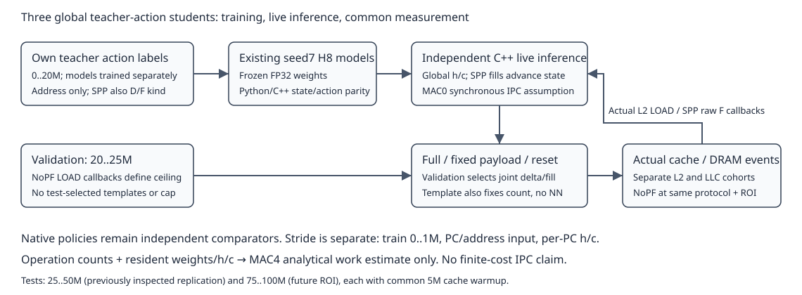
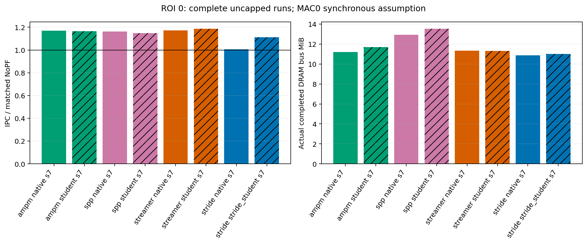
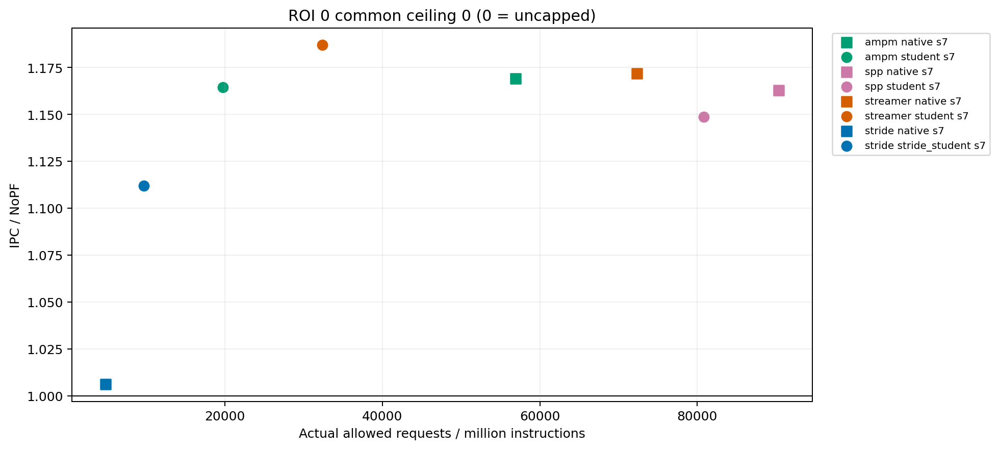
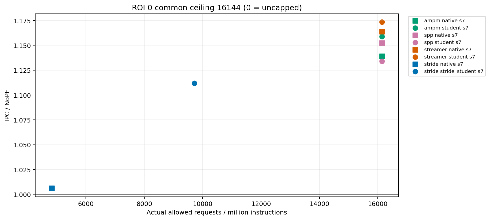
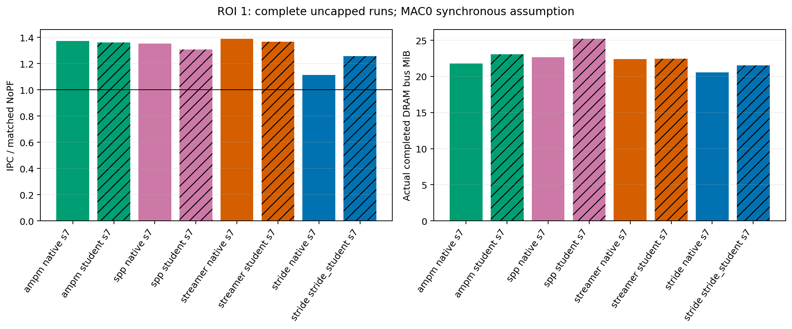
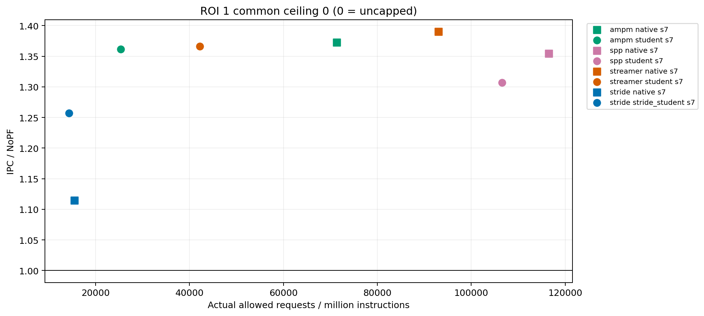
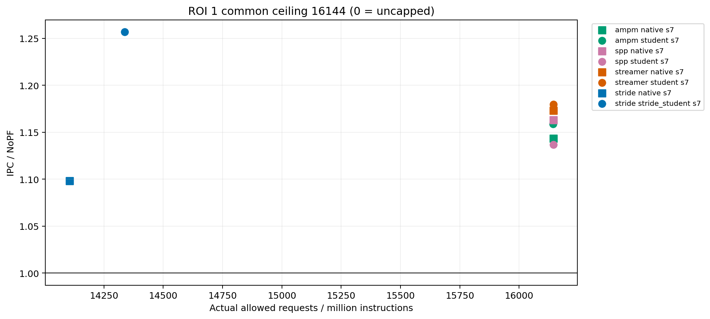
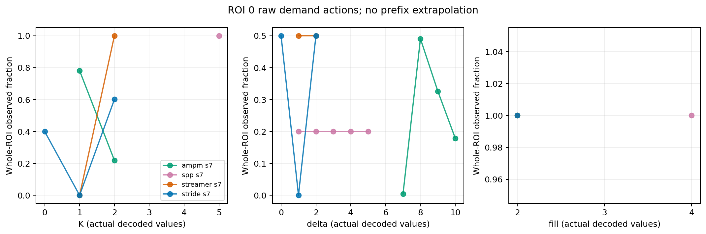
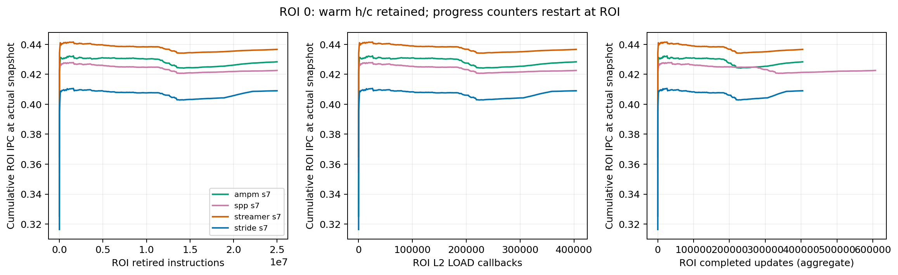
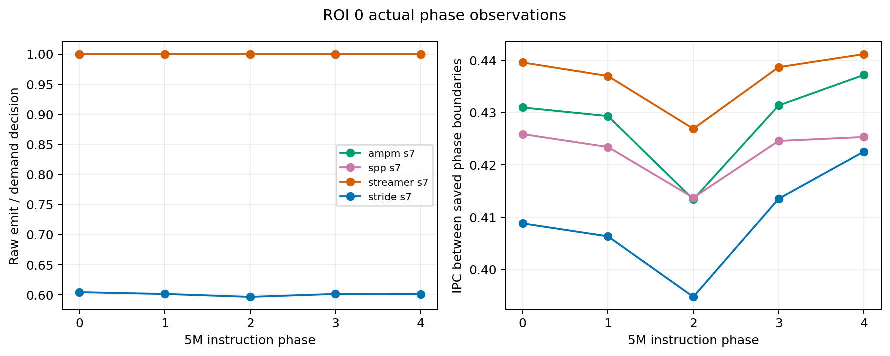
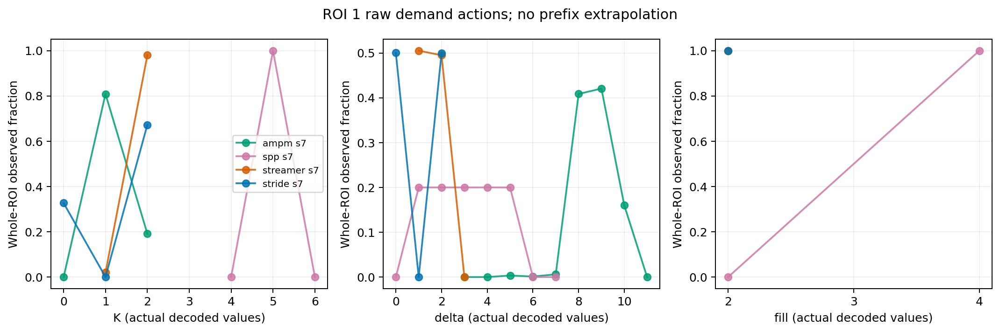
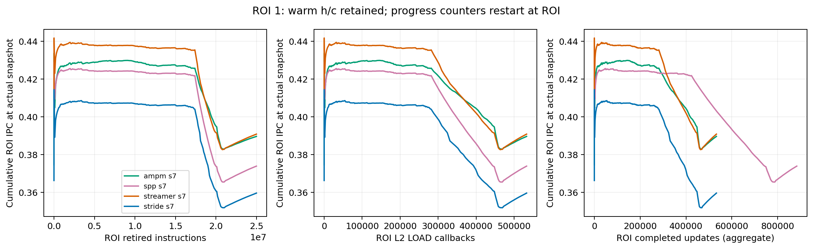
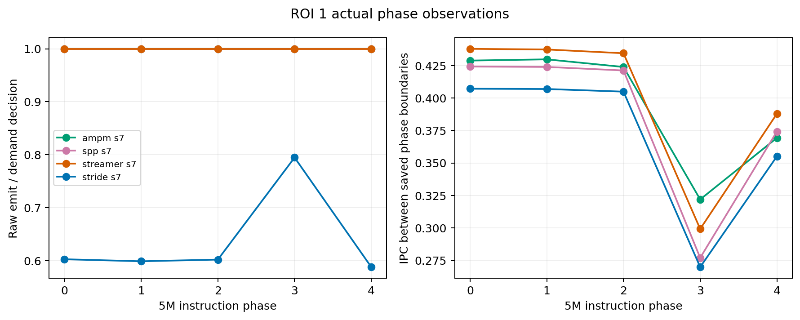
{
"protocol": "Separate four602 frozen-live MAC0 study. New protocol only. Existing checkpoints, source and prior results preserved.",
"ipc": "Retired ROI instructions / measured ROI cycles; tiny retirement overshoot is retained, not rescaled.",
"mpki": "1000 * L2 LOAD misses M / retired ROI instructions. NL is L2 LOAD accesses.",
"accuracy": "Separate target-level LOAD-useful / target cohort enqueued; cohort starts on first source L2 PQ insertion; denominator includes ROI-end pending and resident-unused. Cache merges and WQ forwards are not new target-cohort enqueues. Cohorts retain FIRST source-enqueue intent; a later merge may upgrade final fill level. These are neither final-fill groups nor any-level total usefulness.",
"timeliness": "Separate target-level timely_load / (timely_load + late_load). RFO usefulness excluded. Zero denominator -> null.",
"coverage": "Separate L2/LLC target LOAD-useful over matched NoPF target-level LOAD misses. L2 target cohort is partial subset if LLC-target requests exist; LLC and L2 ratios never added. Coverage is not a causal claim or net miss reduction.",
"LLC_availability": "LLC accuracy/timeliness/coverage calculated only if llc_only_lifecycle_accuracy_available is explicitly true. Rejected untracked handoffs or missing IDs disable LLC derived ratios, even if some tracked outcomes exist.",
"net_miss_reduction": "(NoPF LOAD misses - candidate LOAD misses) / NoPF LOAD misses; separate L2 and LLC, distinct from useful-request coverage.",
"request_budget": "requests_per_million_instructions = 1e6 * request_gate_allowed / actual retired instructions. Cap selected only from validation NoPF eligible L2 LOAD callbacks; common ceiling does not imply same realized allowed count.",
"cache_results": "Allowed = accepted_nonmerged + merged + rejected. accepted_nonmerged may include WQ forwarding; actual PQ insertion is a separate field. PQ insertion = L2-target cohort enqueued + LLC-target cohort enqueued.",
"DRAM": "Use actual DRAM controller queue and actual bus start/completion events, bytes = those transfers * line_bytes. Started and completed bytes separate, with initial and final pending counts. Never issued prefetches * 64. Bus bytes include all traffic, not just prefetches.",
"NN_traffic_storage": "Frozen resident weights have no modeled weight DRAM fetches. 4*MAC is neither measured weight traffic nor DRAM; biases/reuse/cache behavior are excluded. Weights+h/c is partial payload. Host runtime object+persistent requested heap already includes weights/hc and must not be added to them. Observed Infer heap peaks cover specified correctness fixture only, not all-input bounds. Excludes outer Four602 controller, measurement, stack, malloc metadata and native diagnostic histograms; not complete hardware SRAM, RSS, RTL area or deployment cost.",
"MAC0": "Measured IPC assumes synchronous zero-cost C++ inference. Actual operation counters retained. MAC4 aggregate work estimates are not finite-cost simulation or predicted IPC; exclude scheduling/queue/control/scratch overhead.",
"state": "Streamer/AMPM/SPP use one chronological global h/c without decoder cap; Stride student retains its original per-PC64 runtime/decoder32 and recorded current-line filter. reset_state clears before every callback. Training instruction count 0..20M is not online state history.",
"SPP_inputs": "Student training/live sees every raw CACHE L2-fill callback, using evicted address and event kind. Native SPP preserves existing FILTER feedback on prefetch fills only. Do not claim identical effective input streams.",
"actions": "Stride raw_K precedes its existing decoder cap; Stride delta comes from actual decoded slots and fill=2 is fixed interface, not a learned fill. Full raw global model actions before validation-selected payload intervention and common output gate; payload after intervention. Four monitor's empty distributions are excluded for separate stride_* engines. SPP fill callbacks update h/c but do not emit and are excluded from demand-action histogram denominator.",
"observation_axes": "instructions, demand_callbacks and completed_updates shown on curves are ROI-reset counters. h/c already inherits the configured5M warmup except reset_state. warmup_completed_updates/demand_callbacks/fill_callbacks are separately exposed. Completed updates are aggregate callbacks, not per-PC visible history or training samples. These curves do not start from zero-history and do not establish a minimum sample/history requirement.",
"phases": "Generation profiles follow 5M retired-instruction bins, final bin absorbs retirement overshoot. Classified allowed time uses actual gate phase; useful cohorts retain generation origin. Progress interval values are exact differences of saved snapshots, with actual endpoints recorded; no prefix extrapolation.",
"splits": "Streamer/AMPM/SPP source training0..20M (8 epochs); Stride retained formal_v2 training0..1M (12 epochs balanced). Different training budgets mean teacher/student paired routes, not a matched four-model learning-algorithm ranking. Shared validation20..25M, tests25..50M and75..100M with common5M cache warmup. 25..50M previously inspected, explicitly a replication ROI; 75..100M future interval. Validation lies before tests, may overlap test cache warmup. No new independent training seeds implied.",
"causality": "Only actual fixed_payload/template/reset_state contrasts establish intervention outcomes; action labels alone do not establish IPC attribution. Fixed payload preserves the complete forward/K/hc update for a given current callback, but changed prefetches alter later cache behavior, future callbacks and entire hc trajectory; entire-run state equality is not guaranteed. Negative and mixed results retained.",
"SPP_label_canonicalization": "Offline SPP normalize_actions deduplicates equal target addresses and keeps min fill (L2 has priority), representing canonical queue-effect labels. Native generated profiles count raw source prefetch calls. Their K distributions have different call/canonical-action scopes; never assert exact teacher-action agreement from K alone.",
"teacher_classification": "Four602 global native/student/template routes set teacher_category=3 (unclassified/not available); no shadow-teacher overlap or silent attribution is inferred. The retained Stride runtime separately records its arrival-time shadow labels 0/1/2.",
"unused": "ROI-unused and evicted-unused are lifecycle outcomes, not direct pollution measurements.",
"null": "Missing baseline, missing source evidence or zero denominator -> null; absent counter fields fail applicable schema checks instead of silently becoming zero."
}